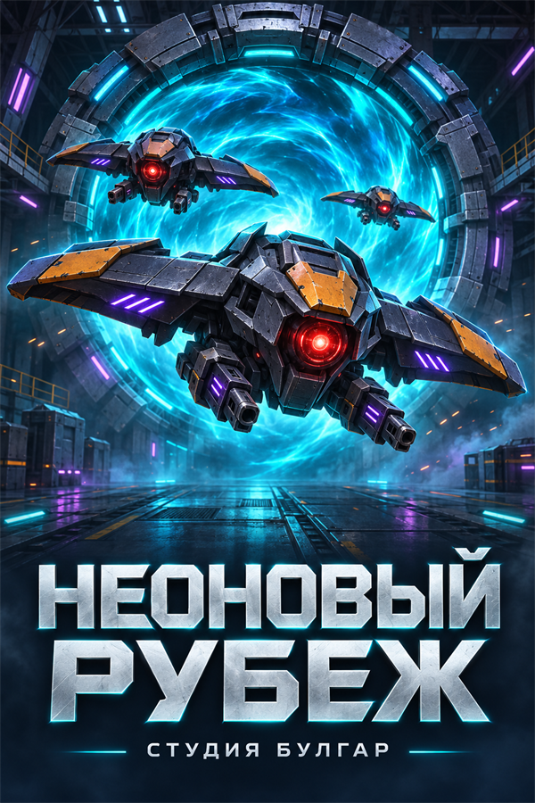
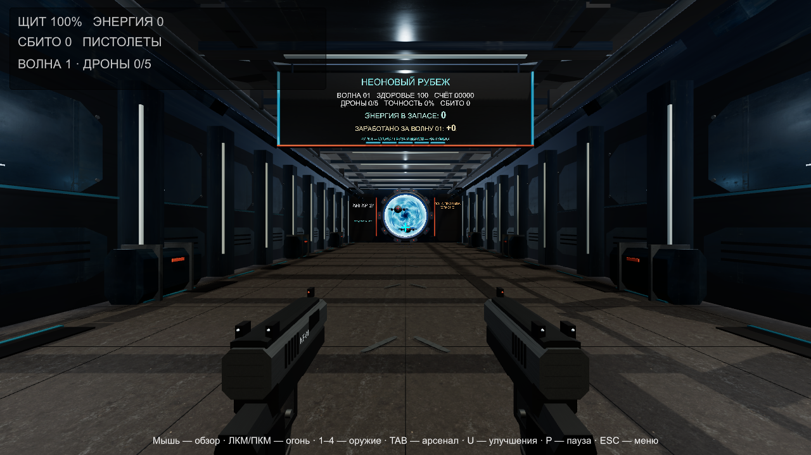
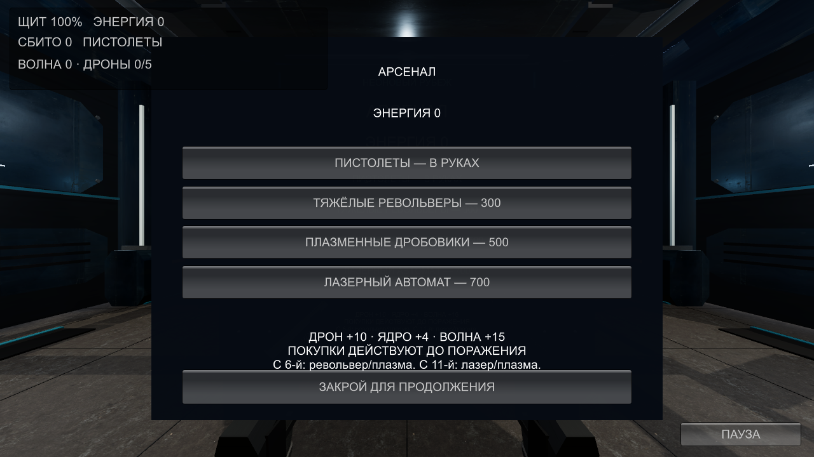

Одна арена. Всё сложнее.
С каждой волной меняются манёвры и броня противников. Просто держать оружие перед собой не получится.
СТУДИЯ БУЛГАР · ВЕРСИЯ 0.8.0
Портал открыт.
Удержи последнюю линию обороны.
Боевые дроны выходят из портала, уходят во фланг и прорываются к игроку. Сбивай противников, зарабатывай энергию и меняй оружие, чтобы выдержать следующую волну.
Оплата через ЮKassa на сайте. После подтверждения платежа появится кнопка скачивания игры.
Приём настоящих платежей пока подключается.

С каждой волной меняются манёвры и броня противников. Просто держать оружие перед собой не получится.
Пистолеты, тяжёлые револьверы, плазменные дробовики и лазерный автомат. Трать заработанное на оружие, улучшения и восстановление щита.
Играйте через интернет по коду комнаты или в локальной сети. Общайтесь голосом прямо в игре. Общие волны и личный счёт: сбитие получает игрок, который сам нанёс необходимый урон.
ИГРОВОЙ ПРОЦЕСС


ДВА СПОСОБА ИГРАТЬ
Распакуй архив целиком и запусти «Запустить на ПК.cmd» или выбери обычный ПК в NeonFrontier.exe. Шлем и SteamVR не нужны.
Подключи шлем к компьютеру через PICO Connect и запусти SteamVR. Затем открой «Запустить VR.cmd» или выбери VR в NeonFrontier.exe.
Игра проверялась с PICO 4 Ultra. На самом шлеме без компьютера не запускается. Покупка в Steam и установка Unity не требуются.
Оружие следует за движениями контроллеров. На левой тумбе — пауза, на правой — выход. Арсенал и улучшения доступны между волнами.
ПЕРЕД ПОКУПКОЙ
Минимальные требования к видеокарте и частоте кадров пока не определены на широком наборе компьютеров. Сочетание «ПК + VR» требует дополнительной проверки; одиночный ПК и игра вдвоём в VR уже тестировались.
300 ₽ за персональный ключ: активация на двух компьютерах, один одновременный запуск, три сеанса скачивания архива по 24 часа. Для запуска и игры требуется интернет. Старую активацию можно снять на сохранённой странице заказа. Для двух игроков нужны две лицензии.